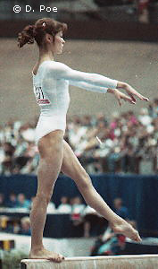

Silvia Topalova (BUL)
1982 Balkan Championships UB Gold Medalist

Competition Results
- 1978
- CAN-BUL Dual Meet: 6th AA
- Dynamo Spartakiade: 3rd AA, 1st UB
- FRG-BUL Dual Meet: 1st Team, 1st AA
- Golden Sands International: 13th AA, 2nd UB
- World Championships: 10th Team, 32nd AA
-
- 1979
- Spartakiad: 3rd AA, 1st UB, 2nd V
- World Championships: 8th Team, 20th AA
-
- 1980
- Cottbus International: 5th AA, 5th V, 5th UB
- FRA-BUL Dual Meet: 1st Team, 1st AA
- Golden Sands International: 1st AA, 1st UB
- Moscow News: 13th AA, 3rd UB
- Riga International: 8th AA
- World Cup: 18th AA
-
- 1981
- Balkan Championships: 2nd Team, 11th AA
- European Championships: 16th AA
- Golden Sands International: 2nd AA, 1st BB, 2nd UB
- Hungarian International: 1st AA, 1st B, 5th FX
- Paris Grand Prix: 3rd AA, 2nd B, 4th UB, 4th FX
- World Championships: 7th Team, 22nd AA
-
- 1982
- Avignon International: 2nd AA
- Balkan Championships: 2nd Team, 5th AA, 1st UB, 4th B
- FRG-BUL Dual Meet: 1st Team, 1st AA
- Hungarian International: 1st AA, 2nd UB, 4th B
- Rouen International: 10th AA
SKDA Championships: 1st Team, 3rd AA, 2nd UB, 3rd B
-
- 1983
- BUL-HOL Dual Meet: 1st Team, 2nd AA
- Chunichi Cup: 9th AA
- GBR-BUL Dual Meet: 1st Team, 8th AA
- Tokyo Cup: 3rd V, 3rd UB
- World Championships: 4th Team, 13th AA, 6th UB
-
- 1984
- American Cup: 5th AA
- CSSR Spartakiade (Olomouc): 6th UB
-
- 1985
- Balkan Championships: 2nd Team, 10th AA
- European Championships: 26th AA
- Golden Sands: 1st AA, 1st B
- Rome Grand Prix: 2nd AA
This page was last updated on May 11, 2026.
© Gymn Forum